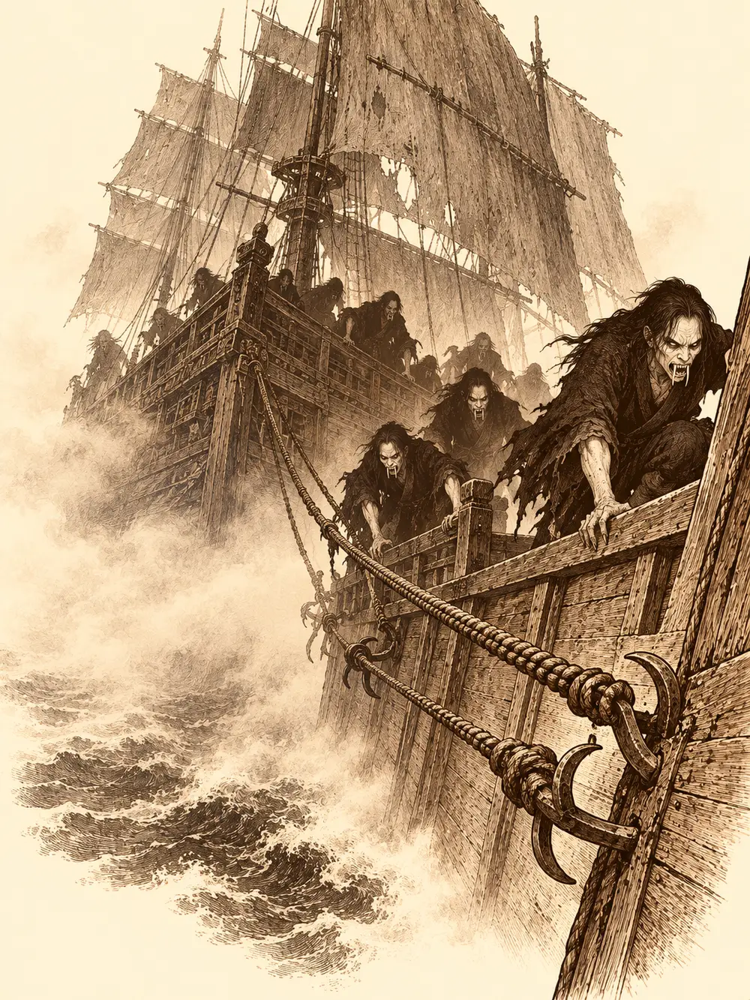

Capítulo 141
De piratas va la cosa
Libro IX · Mareas y muertos
Calista se inclinó sobre los planos que Guxi había extendido en la mesa del trono, sujetos por las esquinas con dos tazas y un tintero. Era el dibujo de una torre. En lo alto, una piedra central haría de resonador y conectaría con otras piedras más pequeñas, de modo que varias pudieran hablar a la vez.
"Hasta catorce, más o menos", dijo Guxi. "Tendría que hacer pruebas".
Serafina había venido con él y se mantenía un paso atrás, con los brazos cruzados. Desde la noche del esqueleto se sentía incómoda delante de la shogun y de su guardián, y no lo disimulaba del todo. Había estado a punto de romper su compromiso. No lo había hecho.
Calista estudió los números un buen rato. Para aquellos tiempos y con aquella crisis, construir una red así era demasiado ambicioso; quizá cuando acabara la guerra. Por ahora le bastaba con una torre para el shogunato y piedras pequeñas para los campamentos y los cazadores.
"Aunque tuviéramos la mano de obra", dijo Guxi, "no tenemos el material. En Kuroto no hay".
Calista sonrió y se inclinó hacia ellos.
"Por eso os he hecho venir. Vais a acompañarme en un viaje. Quiero usar tu barco de vapor y necesito a alguien que lo entienda y lo repare si hace falta". Miró a Serafina. "Y una capitana que conozca los mares. Iremos a Brunami del Este, a la parte más pacífica. Allí pienso abrir el comercio, vender nuestros productos y establecer relaciones. Y quizá tú encuentres tus piedras".
Había pasado semanas dejando atado el gobierno para que todo funcionara en su ausencia. Les presentó a Yamato, uno de sus nuevos consejeros, que haría de enlace con los cazadores cuando ella no pudiera atenderlos. Gelbreak, por supuesto, iría como guardián.
En el puerto, el responsable de los muelles discutía con un hombre que llevaba gorro de capitán. Según el hombre, su velero estaba atracado allí y había desaparecido, con la tripulación preparada para zarpar. Según el responsable, nunca había habido ningún barco registrado a ese nombre. Llevaban una hora así. Guxi le propuso ayudarlo a buscarlo y, cuando el capitán dijo que el barco no estaba en el puerto, le ofreció llevarlo a él y a sus hombres a cambio de que echaran una mano a bordo. Habría salido bien si Serafina, que aún arrastraba el mal humor de una discusión con su prometido por una revista que él guardaba olvidada, no hubiera empezado a gritarle al capitán. El hombre se dio la vuelta y dijo que ya no tenían tripulación.
Calista se había quedado atrás mirando puestos, disfrazada de humana. Una voz cantó a su espalda que llegaba el capitán de los doce mares, y apareció Gelbreak con un atuendo de pirata y el pecho al aire. La shogun se quedó en blanco. Él miró a los lados y le dio un beso en mitad del muelle, y ella tardó un rato en volver a hilar dos frases seguidas.
Cuando por fin llegaron a la oficina del puerto, Calista quiso saber cómo era posible que se perdieran barcos en un puerto de Kuroto. Habría que hacer reformas, y pensaba investigarlo. Guxi exigió una disculpa de Serafina antes de seguir, y la capitana se la dio al hombre entre dientes. Calista les ofreció entonces trabajar para el shogunato.
"No, señora. Nosotros somos marineros libres. No nos atamos a ningún sitio".
Al final acordaron que viajarían hasta Brunami ayudando con la carga y con lo que hiciera falta, sin convertirse en tripulación de nadie. Fue entonces cuando Calista vio los anillos en las manos de Guxi y Serafina y comprendió. Los felicitó con una sonrisa sincera.
Zarparon con los marineros libres, unos cuantos guardias y las bodegas llenas de mercancía. Calista llevaba también ropa de pirata y un escote que distraía a su guardián cada vez que se agachaba sobre las cartas de navegación. Aun así, calculó la ruta con los instrumentos y la acordó con el capitán viajero. Serafina tomó el timón y Guxi bajó a la sala de máquinas, donde la caldera rugía como un animal contento.
La tormenta les cayó encima al segundo día. El cielo se puso negro, el mar se levantó en montañas grises y el barco empezó a subir y bajar como una cáscara. Calista dio órdenes a gritos: cabos, hombres a los puestos, achicar. Serafina se aferró al timón y manejó las palancas para mantener el barco nivelado. Abajo, Guxi alimentaba la caldera con la camisa empapada de sudor. El capitán viajero ayudó en todo lo que pudo, pero cuando alguien le pidió que se hiciera cargo, se negó: la capitana era Serafina. Salieron del temporal con el casco entero y el rumbo perdido, y tuvieron que trazarlo de nuevo. Gelbreak lo pasó mal: el mar y él no estaban hechos el uno para el otro.
Esa noche el vigía gritó desde la cofa.
"¡Barco! ¡Bandera negra!".
Calista mandó a los soldados a sus puestos y al capitán viajero a los cañones. Apagaron las luces y bajaron la velocidad con la esperanza de que el otro pasara de largo. No pasó. Se acercó despacio, y a mitad de camino arrió la bandera negra e izó una blanca. Al frente iba un capitán con cara de mono que se presentó como Cloudonson, el terror de todos los mares.
"¿Piratas?", dijo Calista, y sonrió con aquella sonrisa que reservaba para los idiotas. "Yo soy hija de las tormentas. ¿Os vais por vuestro lado o queréis probar la furia del mar que corre por mis venas?".
"No, no, señora, perdone", dijo el mono levantando las manos. "No queremos problemas. Es que estamos un poco perdidos".

Querían volver a su escondite, en la isla de Xoltacan. Tenían brújula, le explicó, y se la enseñó: la aguja daba vueltas como loca. Habían encontrado el tesoro de un pirata antiguo en una cueva y todo lo que se habían llevado resultó estar maldito. Habían intentado tirar una pipa por la borda, y lo que pasó después les quitó las ganas de tirar nada más. Le ofreció un sombrero a cambio de indicaciones. Calista les explicó el rumbo, hacia el este, y les advirtió de que no se les ocurriera desembarcar en Kuroto. Los piratas se alejaron agradecidos.
De madrugada, unos golpes en cubierta despertaron a Calista, a Gelbreak y a Serafina. El drow subió en pantalones y Serafina tropezó con él en la escalera, con las orejas tiesas y los ojos medio cerrados. Arriba no había nadie. Solo niebla.
Entonces Serafina la vio. Una figura oscura saltó por encima de la barandilla, no se oyó ningún chapuzón, y después la sombra se elevó sobre el agua y se alejó flotando hasta perderse en la bruma.
"¿Lo has visto?".
Gelbreak se asomó. No había visto nada. Le preguntó si no lo habría imaginado.
"No estoy tan borracha como para imaginarme cosas".
Él se encogió de hombros y volvió a bajar. Serafina se quedó de guardia. Al rato oyó un golpeteo contra el casco: un bote de remos vacío, que chocaba una y otra vez con la madera. Lo subió a bordo con unos ganchos. Dentro había un fardo de viaje, unos libros de entrenamiento y una caja con vendas rojas, muy resistentes.
Por la mañana se lo enseñó a todos. Guxi se fijó en que la letra de los libros no era de Kuroto. Gelbreak reconoció las vendas: eran para pelear. Se las enrolló a la capitana en las manos, como se hacía, y le dijo que probara un golpe. Serafina se quedó quieta. Le dolía la cabeza, como si intentara recordar algo y la memoria se le escapara entre los dedos. Dijo que no, que ahora no. Calista le ofreció hablar, y ella prefirió centrarse en la misión. Nadie supo a quién había pertenecido aquel bote ni si tenía algo que ver con la sombra.
"¡Ballena!".
Serafina fue la primera en verla: cruzaba una y otra vez por delante del barco, a unas millas, como si quisiera levantar un muro con su cuerpo. Había pasado media vida en el mar y sabía lo que significaba ese movimiento. Estaba protegiendo algo.
"¡Guxi, detén el barco!".
Pasaron casi una hora quietos mientras la ballena iba y venía. Al fin, Calista se zambulló y nadó hasta ella. Volvió a bordo con el pelo chorreando. Delante tenían un arrecife, y si seguían recto el barco lo haría pedazos. Le había prometido rodearlo. Trazó una ruta nueva con un desvío de unas cinco millas, viraron, y la ballena les dio las gracias a su manera, con un chorro de agua por encima de la cubierta.
Más tarde, mientras Guxi y Serafina hablaban junto a la borda de cómo los marineros decían la mar y no el mar, ella oyó una voz que se quejaba. Se asomó y vio un pez payaso, rojo y blanco, que la miraba con el ceño fruncido.
"Siempre igual, los terrestres. Con sus máquinas enormes, sin mirar por dónde van. Me habéis golpeado. Y estas corrientes están señalizadas con algas, por si no lo sabíais".
Guxi y Serafina intentaron explicarle que la superficie también era de alguien. El pez no quiso escucharlos y se marchó nadando muy ofendido.
La siguiente niebla llegó corriendo por encima del agua, y con ella unas risas. El vigía gritó que algo malo se acercaba. Por la popa apareció un barco antiguo, de velas grises y madera vieja, y de sus cañones no salieron balas, sino ganchos con cuerdas que se clavaron en el casco y empezaron a arrastrarlos.
"¡Cañones! ¡Preparad las defensas, nos van a abordar!".
Calista fue la primera en cortar cuerdas. Serafina intentó alejar el barco con el timón. Los cañones de los cazadores destrozaron el mástil enemigo y le arrancaron astillas del casco, y ante sus ojos la madera volvió a unirse sola, como una herida que se cierra. Por la borda subieron figuras pálidas de dientes largos. Eran vampiros, piratas vampiros.
Calista se envolvió en protecciones y luego tocó a Gelbreak en la frente. El drow vio el combate un instante antes de que ocurriera. Saltó al barco enemigo y los golpes le pasaban rozando, uno tras otro, sin alcanzarlo; cuando apuntaba con los dedos, a los vampiros les estallaba la cabeza. Guxi sembró torretas y fuego entre la oscuridad que alguien le echó encima. Serafina aseguró el timón y saltó también, con las vendas rojas en los puños.
Cada mordisco que recibía le robaba algo más que sangre, algo que tardaría en recuperar. Y cada vampiro que caía reventaba en una explosión. Ella siguió pegando. Calista le dio velocidad con un conjuro y Serafina se movió como un relámpago entre los no muertos, esquivando unas explosiones y comiéndose otras. Entre todos acabaron con los últimos.
Calista y Gelbreak volvieron a su camarote. Guxi y Serafina registraron la nave enemiga. Caídos sus ocupantes, la madera dejó de repararse y volvió a pudrirse ante sus ojos, con todos los destrozos de los cañones abiertos de nuevo. Entre papeles que no supieron leer encontraron un anillo que brillaba con luz propia. Intentaron averiguar qué hacía y no lo consiguieron. Guxi se lo guardó.
Hubo después unos días de mar tranquila, de sol y de cubierta caliente, hasta que en el horizonte aparecieron las torres del Puerto de las Espadas, en Brunami del Este. Los marineros libres ayudaron a descargar la mercancía, cumpliendo su palabra, y la llevaron al mercado. Calista se arregló el vestido y fue a reunirse con los dirigentes de la ciudad. Guxi echó a andar por las calles de piedra buscando una tienda de minerales.